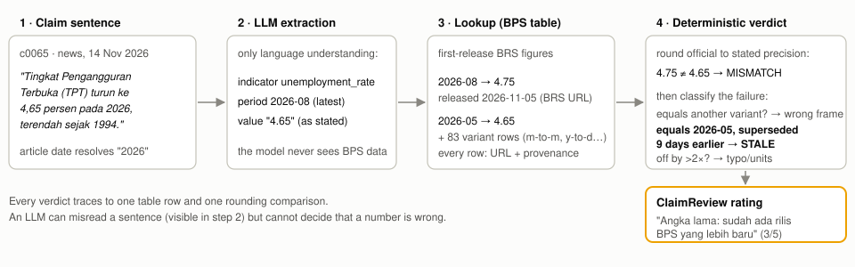
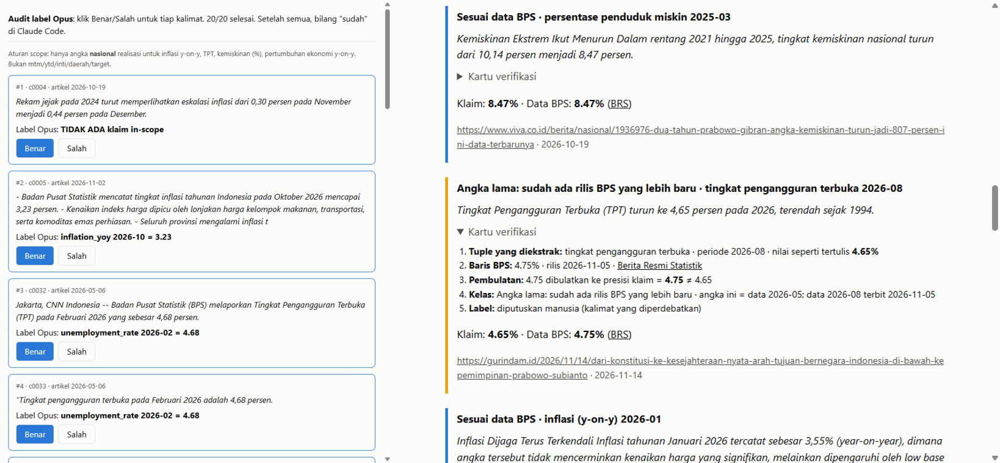

Abstract. Indonesian officials and media routinely attribute headline statistics to Statistics Indonesia (BPS). We ask:
We collected 166 claim sentences from ministry releases and national news, and built an evidence table of 104 first-release BPS figures (2022–2026, each with its release URL and date). We added a second table of 83 variant figures from the same releases. An LLM only extracts (indicator, period, value). The verdict is a deterministic, precision-aware comparison, so it is auditable and cannot be hallucinated.
Findings.
We turn these failure types into schema.org ClaimReview ratings fact-checkers can publish, and keep the evidence table current with a monthly job.
Statistical claims are unusually checkable: "unemployment fell to 4.65 percent" has one authoritative counterpart, published by a national statistics office on a known date. Checking is still slow, because the checker must first decide three things:
These are the steps where an automated fact-checker can fail silently. When it fails it produces the most damaging error in fact-checking: a false accusation against a named official.
We study this for Indonesia. BPS publishes every headline figure in a Berita Resmi Statistik (BRS) release with a stable URL, and government communication cites BPS constantly. We fix the research question before collecting data: Of quantitative claims by Indonesian officials and institutions that cite BPS, what fraction can be bound automatically to an official figure, what fraction mismatch, and how accurately do LLMs do the binding?
Contributions:
Numerical fact-checking benchmarks. QuanTemp [1], earlier released as NUMTEMP, collects real-world numerical, statistical and temporal claims from fact-checking sites and pairs them with web evidence. Its best baselines reach a macro-F1 of about 58. CLEF CheckThat! 2025 Task 3 [2] uses QuanTemp with BM25-retrieved evidence.
All of them are in English, retrieve prose evidence, and let the model produce the verdict. We instead use a small structured evidence table from the statistics office and a deterministic verdict, so every error is attributable to extraction, to the table, or to the rule. We also work in Indonesian.
Fact-checking infrastructure. ClaimReview [3] is the schema.org markup that fact-checkers embed and Google Fact Check Explorer reads. Indonesia's collaborative CekFakta network (22 outlets with Mafindo) [4] and AJI's ClaimReview guidance [5] make it the natural output format.
Existing ratings are true/false scales. Our failure taxonomy adds the distinctions a statistics desk actually needs: a correct number in the wrong frame, or an outdated number.
Claims. We searched for Indonesian articles and press releases stating the four indicators together with BPS attributions ("menurut BPS"). Of 55 URLs, 41 yielded sentences that mention an indicator and a percentage: 166 sentences, 164 after removing duplicates. For the 25 sentences from the Coordinating Ministry for Economic Affairs (ekon.go.id), dates were recovered from the release dateline. Sampling on BPS attribution over-represents claims that quote BPS correctly, so our mismatch rate applies to attributed claims only.
Evidence. bps_reference.csv holds 104 national first-release figures (2022–2026): headline inflation y-on-y, open unemployment (TPT), poverty rate and GDP growth. Each row carries its BRS URL, whose path also gives the release date. 68 values were read on the BRS page in a browser and 31 from listing titles. An independent second pass re-opened 12 rows and found all 12 correct, in the right frame (y-on-y, not the q-to-q figure in the same release). bps_variants.csv holds 83 other figures from the same releases (m-to-m and y-to-d inflation, q-to-q and c-to-c growth), each quoting its evidence sentence.
Pipeline (Figure 1).
round_half_up(official, d) = stated, where d is the number of decimals stated. Tests caught two traps in a naive version: round(5.05, 1) = 5.0 in Python, and JSON parsing that turns "5,0" into "5".
Figure 1. The pipeline on a real claim (c0065). The model only reads language. Lookup, verdict and failure class come from BPS data, so the stale-figure diagnosis cites the release that superseded the number.Systems.
rules, which adds clause-level scope cues and relative periods.Reference labels. A blind Claude Opus subagent annotated all 164 sentences (94 tuples) from written guidelines. A human then decided every sentence where the systems' majority disagreed with the annotator (7), and audited 20 random sentences where all systems agreed with it (§4.3). A tool pass over all rows in which the human changed nothing is not counted as gold.
Metrics.
Synthetic benchmarks (known answers, built from the tables):
95.7% of claim tuples are bindable (90/94, CI 91.1–99.1), and 2.2% of bindable tuples mismatch (2/90, CI 0.0–5.7).
| Speaker / source | Tuples | Bindable | Mismatch |
|---|---|---|---|
| Government officials | 42 | 93% | 0/39 |
| BPS officials | 32 | 100% | 0/32 |
| Journalists / others | 19 | 89% | 2/17 |
| News media (all speakers) | 83 | 96% | 2/80 |
Table 1. Reference labels after human adjudication (results/metrics.md).
Neither mismatch is an official misquoting BPS. The failure taxonomy names both from BPS data alone:
Within this sample, attributed government claims match BPS. The failures are in reporting.
Robustness to the period convention (results/sensitivity.md). The human resolved ambiguous periods as "latest release at the article date". We re-ran the headline under two alternative conventions:
Under all three conventions no official misquotes BPS. The convention moves the bindable rate by about 7 points and decides whether c0065 counts as stale.
| System | Extract F1 | Verdict acc. | Macro-F1 [95% CI] | False MISMATCH | Values not in source |
|---|---|---|---|---|---|
| Claude Sonnet 5.5 † | 0.99 | 0.94 | 0.51 [0.33, 0.62] | 0 | 0 |
| Claude Haiku 5.5 † | 0.99 | 0.93 | 0.51 [0.38, 0.60] | 0 | 0 |
| Gemini 3.8 Flash | 0.99 | 0.87 | 0.68 [0.37, 0.86] | 0 | 0 |
| ERNIE 5.5 Flash | 0.96 | 0.81 | 0.65 [0.35, 0.82] | 0 | 2 |
| Nemotron-3 Ultra | 0.96 | 0.80 | 0.50 [0.36, 0.70] | 7 | 0 |
| rules | 0.63 | 0.30 | 0.30 [0.25, 0.34] | 54 | 0 |
| regex | 0.54 | 0.27 | 0.27 [0.23, 0.33] | 31 | 0 |
Table 2. Systems vs the adjudicated reference (164 sentences; LFM-3 1.7B produced output for only 38). † The reference annotator is Claude, so Claude rows are an upper bound. Macro-F1 is unstable with two reference mismatches; we lead with accuracy and false accusations.
(i) Period, not arithmetic. The most frequent disagreement for every LLM is the period (6–15 per system). On the easy synthetic benchmark every system, including LLM judges with the table in context, scores 100% on all seven perturbation types. Matching a stated number to a table is not the hard part.
(ii) Right number, wrong frame. All 7 false accusations by Nemotron come from sentences quoting month-on-month inflation as plain "inflasi". Of its 8 MISMATCHes:
(iii) Rules accuse. Hand-written scope rules raise recall but produce 54 false accusations, more than the naive regex. Encoding the scope as cues does not replace language understanding.
(iv) Batching leaks. ERNIE attached 2 of its 95 values to sentences that do not contain them. Both values appear verbatim in neighbouring sentences of the same 20-item batch. A 10-sentence batch-size test (identical outputs, κ = 1.0) did not reveal this; the grounding check did. The pipeline now flags every ungrounded value.
| Labeller | 7 disputed sentences | 20 random agreed sentences |
|---|---|---|
| Claude Opus (reference annotator) | 2/7 | 20/20 (95% CI 84–100%) |
| Claude Sonnet 5.5 | 2/7 | – |
| Gemini, ERNIE, Nemotron | 1/7 each | – |
| Claude Haiku 5.5 | 0/7 | – |
Table 3. Exact agreement with a human decision. The disputed sentences are genuinely ambiguous about the period, e.g. "TPT 4,65 persen pada 2026" when BPS publishes no annual TPT. The human chose "latest release at the article date".
When sentences are ambiguous, no labeller, frontier models included, exceeds 2/7. On a random sample of 20 sentences where all systems agreed with the annotator (14 with claims, 6 without), the human found no error (20/20; Wilson 95% CI 83.9–100%). The audit showed the label, so anchoring is possible (data/human_audit_agreed.csv).
Together, the two audits locate the weakness of LLM labels precisely. Where models agree, the labels are reliable. Where they disagree, the sentence is usually ambiguous about the period, and there LLM labels are close to useless (≤2/7). A cheap protocol follows: let an LLM label everything, route disagreements to a human, and spot-audit the rest.
| Model | κ pipeline vs e2e | Accuracy pipeline → e2e | False MISMATCH pipeline → e2e |
|---|---|---|---|
| Gemini 3.8 Flash | 0.91 | 0.87 → 0.88 | 0 → 0 |
| ERNIE 5.5 Flash (124 sentences) | 0.90 | 0.81 → 0.87 | 0 → 0 |
| Nemotron-3 Ultra | 0.68 | 0.80 → 0.85 | 7 → 0 |
Table 4. The LLM-as-judge effect differs by model. Gemini e2e covers 146/166 sentences.
With the answer key in context, Nemotron stops reading month-on-month figures as year-on-year, and its 7 false accusations disappear. Two other models barely change.
On the hard benchmark (stale figures, relative periods), every LLM scores 95–97% and the rule baseline 74%. The rule baseline fails every stale case: it cannot tell what "data terbaru" refers to. All three LLMs fail the same stale item. On 8 Aug 2026, "data terbaru … TPT 4,68 persen" is the February figure, but BPS had already published the May 2026 rate. Claude Sonnet, Claude Haiku and Gemini 3.5 Flash all labelled it February and called it a MATCH. Since 2025, BPS has published unemployment quarterly; the models apply the older February/August calendar from their training data. The judge version (Gemini e2e, with the table in context) misses one more stale case. A release calendar read from the evidence itself (our table takes release dates from BRS URLs) is what catches these. Gemini 3.8 Flash had reached its free daily quota, so Gemini 3.5 Flash was used here (Appendix B).
The deterministic design keeps every extraction visible, so a judge that "reconciles" a speaker's number with the table can be audited instead of trusted.
Implications. For epistemic tools built on LLMs, the failure that matters is rarely a wrong number. It is which statistic and which release: precisely the judgements a reader also gets wrong. Separating extraction from judgement makes those failures visible. Grounding checks catch a failure mode that aggregate accuracy hides: values borrowed from other items. A fact-checker gets a richer, more honest output than true/false:
Stale figures are a distinct kind of misinformation. A stale figure is neither a lie nor an error: it was true when first published. It misleads because the world moved on and the sentence did not. Fact-checking scales that offer only true or false force a choice between "true" (misleading) and "false" (unfair). Automated checkers make this worse. They rely on a release calendar from their training data, and all three LLMs we tested assumed BPS's old February/August unemployment calendar (§4.4). An evidence table that records when each figure was released is what makes staleness detectable.
We ship both as ClaimReview ratings. The public page (https://pugarhuda.github.io/bps-claims-check/claimreview.html) publishes only the 24 claim reviews from sentences a person decided or audited. It validates against schema.org with 0 errors. Each review opens a verification card that shows the full chain: the sentence, the extracted tuple, the BRS row and its release date, the rounding comparison, the failure class, and who checked the label (Appendix C).
Limitations.
Future work.
Attributed headline statistics in Indonesian government communication largely match BPS. The few mismatches we found are reporting failures: a stale figure and a typo. Automated checkers fail in different places: frame, period, and leakage between batched items. None of these show up as "wrong numbers".
A pipeline that lets the model read but not judge, and that classifies failures against the statistics office's own release data, turns these into specific verdicts that are auditable and publishable.
README.md. Every number in this report is in results/*.md.src/update_bps.py, GitHub Action): a live run on 16 Nov 2026 matched the three newest BPS releases.results/agent_raw/.Main harm: false accusation. A MISMATCH attached to a named official is an accusation. Naive automation produces many: 31–54 false MISMATCHes from the rule baselines. Our mitigations:
Misuse. A "Sesuai data BPS" stamp could be applied selectively to favourable claims. Publishing the full claim set and all verdicts is the countermeasure. A judge that reconciles claims with the table it sees can hide real misstatements (§4.4), which is a reason to keep extraction and judgement separate.
Data. The dataset contains:
No private individuals or personal data are included. Untrusted scraped text is sanitised before prompting, and labelling sheets are protected against spreadsheet formula injection.
Easy (105 sentences, 7 kinds). All five systems scored 100%:
rules;Hard (39).
| System | m-to-m unlabelled | "bulan lalu" | "bulan lalu", wrong month | stale "data terbaru" | Overall |
|---|---|---|---|---|---|
| Oracle (true tuple → rule) | 10/10 | 10/10 | 9/9 | 10/10 | 100% |
| Claude Sonnet 5.5 | 10/10 | 10/10 | 9/9 | 9/10 | 97% |
| Claude Haiku 5.5 | 10/10 | 10/10 | 9/9 | 9/10 | 97% |
| Gemini 3.5 Flash | 10/10 | 10/10 | 9/9 | 9/10 | 97% |
| Gemini 3.5 Flash · e2e judge | 10/10 | 10/10 | 9/9 | 8/10 | 95% |
| rules | 10/10 | 10/10 | 9/9 | 0/10 | 74% |
Table B1. Hard synthetic benchmark (results/perturb_hard_metrics.md). Expected verdicts follow the rule "latest release at the article date"; for unlabelled m-to-m figures, anything but a year-on-year MATCH is accepted.
The extraction prompt is in src/pipeline.py (PROMPT, BATCH_PROMPT, E2E_PROMPT). The labelling tool tools/label.html was tested end to end with Playwright (17 checks). The audit tool tools/audit.html recorded the 20-sentence audit.

Figure C1. Human in the loop. Left: the audit tool with the 20 recorded answers (all "Benar"; the label was shown). Right: the public ClaimReview page, with c0065's verification card open. The card shows the extracted tuple, the BRS row and its release date, the rounding comparison, the stale classification, and that a human decided the label.We used Claude (Anthropic) extensively as a coding and writing assistant. It helped:
Claude models also appear as evaluated systems (Sonnet, Haiku) and as the reference annotator (Opus). We disclose this throughout and do not count LLM labels as human gold. All numbers were produced by scripts in the repository, and the human author made the adjudication decisions.